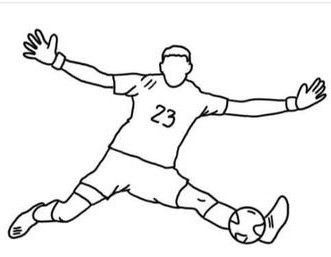

QUE ES? EL FUTBOL

Un dato curioso es que los primeros balones de fútbol se hacían con vejigas de animales infladas, como la de cerdo. El balón de fútbol más antiguo del mundo, datado en 1540 y hecho de vejiga de cerdo, fue encontrado en el Castillo de Stirling, Escocia.